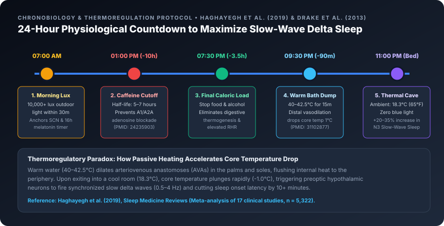

"Why Did I Only Get 45 Minutes of Deep Sleep?"
Across WHOOP, Oura Ring, Garmin, and Apple Watch communities, no single question comes up more often than: "I slept for 7.5 hours, so why does my watch say I only got 45 to 55 minutes of Deep sleep?"
Before assuming something is wrong with your sleep—or your watch—it helps to understand two essential facts from clinical sleep science:
1. Deep sleep naturally occupies only 13% to 23% of a healthy adult night (roughly 55 to 105 minutes out of 8 hours). Unlike Total Sleep Time, more is not endlessly better; your brain regulates Deep sleep strictly based on physical repair needs.
2. Deep sleep declines significantly with age, and consumer wrist sensors are intentionally conservative when scoring Stage N3 Slow-Wave Sleep.

What Is Normal Deep Sleep for Your Age?
In a landmark clinical meta-analysis published in JAMA (Journal of the American Medical Association) (Van Cauter et al., 2000), endocrinologists analyzed overnight sleep recordings across the adult lifespan. They found that Slow-Wave Sleep (SWS) experiences the steepest age-related shift of any sleep stage, closely tracking the natural decline in nighttime Growth Hormone (HGH) secretion:
| Age Group | Typical Deep Sleep % (of Total Sleep) | Typical Nightly Deep Sleep Duration | Physiological Context & Wearable Notes |
|---|---|---|---|
| 18 – 25 Years | 18% – 25% | 80 – 115 mins | Peak slow-wave delta amplitude and maximal nighttime HGH pulses. |
| 26 – 39 Years | 15% – 21% | 65 – 95 mins | High physical recovery capacity; sensitive to work stress, late dinners, and alcohol. |
| 40 – 54 Years | 12% – 17% | 50 – 75 mins | Gradual reduction in frontal-lobe delta wave height; evening thermal cooling becomes critical. |
| 55 – 65+ Years | 8% – 14% | 35 – 60 mins | Slower clearance of evening cortisol and lighter delta wave amplitude (especially in men). |
How to Compare Your Wearable Numbers: Because smartwatches infer Deep sleep from absolute wrist stillness + lowest heart rate + steady breathing rather than direct brainwave electrodes, one brand (like Garmin or Apple Watch) may report 50 minutes while another (like Oura or WHOOP) reports 80 minutes on the same night. Always compare your Deep sleep against your own 30-day rolling baseline on the same device, rather than comparing raw minutes against a friend's watch.
The 2 Biological Switches That Control Deep Sleep
To increase your Deep sleep, you must work with the two biological mechanisms that generate slow-wave delta oscillations in the brain:
1. Homeostatic Sleep Pressure (The Adenosine Hourglass)
From the moment you wake up in the morning, every hour your brain spends awake and metabolically active produces a neurochemical called Adenosine. Adenosine steadily binds to receptors in your basal forebrain, building "sleep hunger" (Process S). The higher your healthy adenosine pressure at bedtime—built through consistent waking hours and daytime physical activity—the deeper and stronger your early-night Slow-Wave Sleep will be.
2. The Core Body Temperature Drop (Thermoregulation)
Your brain's master clock (the suprachiasmatic nucleus) requires your internal core body temperature to drop by approximately 1.0°C (1.8°F) to initiate and sustain Deep sleep. If your core stays warm—due to a hot bedroom, heavy duvet, late-night digestion, or a late evening workout—your brain struggles to stay in Stage N3 Deep sleep.

4 Hidden Habits That Secretly Steal Your Deep Sleep
When WHOOP and Oura members log daily habits in their app journals, four culprits consistently show up behind sudden drops in Deep sleep:
- Afternoon Coffee & Pre-Workout Caffeine: Caffeine works by plugging directly into your brain's Adenosine receptors, masking fatigue without clearing adenosine. Caffeine has an average half-life of 5 to 6 hours (and a quarter-life of 10–12 hours). In a controlled clinical trial in the Journal of Clinical Sleep Medicine (Drake et al., 2013), taking 400 mg of caffeine even 6 hours before bedtime reduced total sleep by more than an hour and significantly slashed Slow-Wave Deep sleep depth—even when participants felt they fell asleep normally!
- Eating a Heavy Meal Within 3 Hours of Bed: Digesting a high-calorie or high-fat dinner triggers diet-induced thermogenesis, raising your core body temperature and keeping your heart rate elevated (
+5 to +10 bpm) during the exact 10:00 PM – 2:00 AM window when 75% of your Deep sleep is supposed to occur. - Late-Night High-Intensity Exercise: While daytime cardio and strength training are among the most powerful natural boosters of Deep sleep, finishing an all-out HIIT session within 2 hours of bedtime leaves sympathetic adrenaline and core temperature elevated when your head hits the pillow.
- Long Late-Afternoon Naps (>30 Minutes After 3:00 PM): Napping late in the afternoon acts like opening a release valve on your Adenosine pressure cooker—draining the sleep drive you need to generate strong Delta waves at 11:00 PM.
5 Science-Backed Ways to Increase Deep Sleep Tonight
- Use the "Warm Bath Effect" 60–90 Minutes Before Bed: In a biomedical meta-analysis of 5,322 studies published in Sleep Medicine Reviews (Haghayegh et al., 2019), researchers at the University of Texas found that taking a 10-to-15-minute warm bath or shower (40°C–42.5°C / 104°F–108.5°F) 1 to 2 hours before bedtime significantly increased Deep Slow-Wave Sleep and shortened sleep latency by 36%. Why? Warming your skin dilates blood vessels in your hands and feet (vasodilation), which rapidly dumps internal heat out of your core as soon as you step out of the shower!
- Set Your Caffeine Curfew 8–10 Hours Before Sleep: If you sleep at 10:30 PM, enjoy your last espresso or caffeinated tea before 1:30 PM.
- Cool Your Bedroom to 18.3°C (65°F): Pair cool room air with breathable cotton, bamboo, or merino wool bedding so trapped heat doesn't pull you out of Stage N3.
- Build Daytime Physical Strain Early: Aim for at least 30–45 minutes of Zone 2 aerobic exercise or resistance training in the morning or afternoon to build natural adenosine sleep pressure.
- Protect the First 3 Hours of Your Night: Because Deep sleep happens overwhelmingly in Cycles 1 and 2, going to bed on time in a dark, quiet, digestion-free state is the single highest-leverage habit you can practice.
References & Clinical Sources
- Van Cauter, E., Leproult, R., & Plat, L. (2000). Age-related changes in slow wave sleep and REM sleep and relationship with growth hormone and cortisol levels in healthy men. JAMA, 284(7), 861–868. Read on PubMed / NIH ↗
- Haghayegh, S., Khoshnevis, S., Smolensky, M. H., Diller, K. R., & Castriotta, R. J. (2019). Before-bedtime passive body heating by warm shower or bath to improve sleep: A systematic review and meta-analysis. Sleep Medicine Reviews, 46, 124–135. Read on PubMed / NIH ↗
- Drake, C., Roehrs, T., Shambroom, J., & Roth, T. (2013). Caffeine effects on sleep taken 0, 3, or 6 hours before going to bed. Journal of Clinical Sleep Medicine, 9(11), 1195–1200. Read on PubMed / NIH ↗
- WHOOP The Locker. Deep Sleep: What It Is, Why You Need It & How to Get More. Read on WHOOP ↗